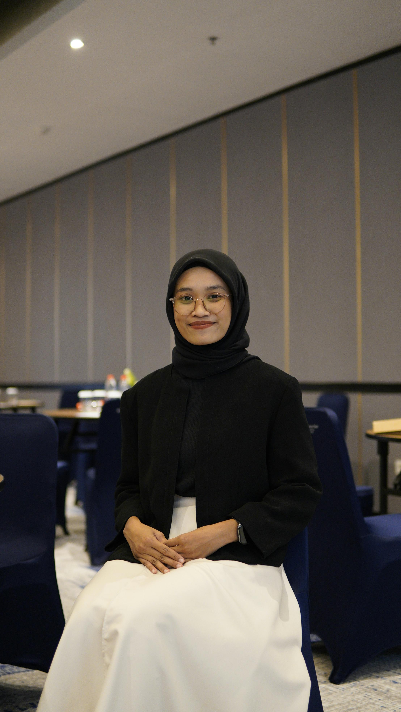

Solusi kesehatan modern
Kami hadir dengan layanan spesialis terbaik dan fasilitas modern untuk kenyamanan anda
Lihat LayananTim Dokter Spesialis
Tenaga medis ahli yang siap melayani anda dengan sepenuh hati
Dr. Adrian Wijaya, Sp.JP
Spesialis Jantung
Ahli kardiovaskular dengan pengalaman lebih dari 10 tahun di rumah sakit internasional

Dr. Sarah Anindita, Sp.S
Spesialis Saraf
Berfokus pada pengobatan saraf pusat dan rehabilitasi pasien pasca stroke

Dr. Budi Santoso, Sp.OT
Spesialis Bedah Tulang
Spesialis ortopedi yang ahli dalam menangani cedera tulang dan sendi